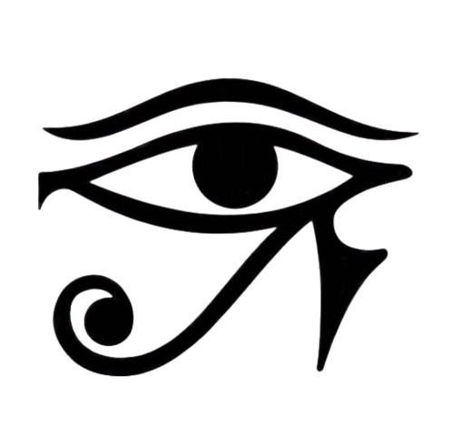

Descubra a Escrita:

Hieróglifica
- Egito, 3200 a.C
Hieróglifos é o nome dado aos caracteres de um tipo de escrita usado no Egito Antigo. Nesse sistema de escrita, cada desenho (ou hieróglifo) representa uma coisa, uma pessoa, um som ou uma ideia. Sua origem remonta a cerca de 2700 a.C., tendo se desenvolvido a partir da escrita pictográfica que existia anteriormente no Egito.


Qual a importância?
A importância dos hieróglifos está em revelar aspectos históricos e culturais do Egito Antigo. A beleza de seus símbolos e a complexidade de sua escrita mostram a sofisticação do povo egípcio, bem como a habilidade de seus escribas. Além da escrita hieroglífica, mais usada em cerimônias religiosas e monumentos, os egípcios também desenvolveram outros tipos de escrita: a hierática, a demótica e a cóptica. O nome "hieróglifo" vem do grego e significa “escrita sagrada”.
Quais os tipos de hieróglifos?
-
Os hieróglifos podiam representar um objeto, uma ação ou até mesmo um som. Por isso, costumam ser divididos em três tipos: fonogramas, ideogramas e determinativos.
-
Os fonogramas são hieróglifos que representam sons da fala. Alguns representam apenas um som, enquanto outros podem representar dois ou até três. Quando são mais complexos, costumam vir acompanhados de outros sinais para ajudar na leitura correta.
-
Os ideogramas representam o significado de uma palavra por meio da imagem. Por exemplo, o desenho de um sol podia representar o próprio sol ou a ideia de luz e calor. Nesses casos, o desenho mostra a ideia principal da palavra.
-
Já os determinativos são hieróglifos que não eram lidos em voz alta. Eles serviam para mostrar o tipo de palavra usada. Um determinativo podia indicar, por exemplo, se a palavra era sobre uma pessoa, um lugar ou uma ação.

Como os hieróglifos foram decifrados?
Os hieróglifos permaneceram um mistério para a humanidade por muitos séculos. Os pesquisadores apenas conseguiram decifrar seu significado no século XIX, com a descoberta da Pedra da Roseta , encontrada por oficiais franceses sob comando de Napoleão em 1799.
A Pedra da Roseta é uma estela de basalto (tipo de rocha) com catorze linhas na escrita hieroglífica, 32 na demótica e 54 na grega. Como o grego já era conhecido, foi possível traduzir sua escrita, e os pesquisadores compreenderam que esse documento era um decreto traduzido em três línguas dos sacerdotes da cidade de Mênfis para assinalar a coroação de Ptolomeu V, em 196 d.C. Dessa forma, os pesquisadores conseguiram tanto decifrar os sinais e as características da escrita demótica como as primeiras pistas da escrita hieroglífica ainda no século XIX.
Entre os mais importantes pesquisadores, destaca-se Jean-François Champollion, que transliterou centenas de trechos de hieróglifos. Atualmente, a Pedra da Roseta se encontra em exposição no British Museum, em Londres.
Curiosidades sobre os hieróglifos:

O Brasil é o país da América Latina com o maior acervo de itens do Egito Antigo, inclusive peças com escritos em hieróglifos. Esses itens foram adquiridos pelos imperadores Dom Pedro I e Dom Pedro II, que eram grandes interessados em história e Egiptologia.
Os hieróglifos fonéticos não apresentavam vogais. Apenas as consoantes eram escritas, e as vogais eram adicionadas na hora da leitura, de acordo com o som esperado da palavra.


A escrita em hieróglifos podia ser lida tanto da esquerda para a direita quanto da direita para a esquerda. Para saber o sentido correto, basta observar a direção para onde as figuras humanas ou animais estão olhando.
Os hieróglifos não eram usados no dia a dia da população. Eram reservados para ocasiões importantes, como monumentos e cerimônias religiosas. No cotidiano, os egípcios usavam formas mais simples de escrita, como a demótica.


Qual a origem dos hieróglifos?
Os antigos egípcios acreditavam em uma origem mitológica para a origem dos hieróglifos. Para eles, foi
Thoth, o deus egípcio da sabedoria, que teria ensinado em tempos remotos os hieróglifos aos seres
humanos.
Existe um debate entre os historiadores, egiptólogos, linguistas e arqueólogos sobre a origem da primeira
forma de escrita, o título de inventor da escrita é disputado entre egípcios, com seus hieróglifos, e
mesopotâmicos, com a escrita cuneiforme.
No Egito, os registros mais antigos de hieróglifos estão relacionados ao Rei Escorpião. Ele recebeu esse nome justamente pelo fato de o único artefato representando-o possuir uma figura de escorpião ao seu lado assim como uma figura de flor. Esses símbolos são considerados os mais antigos hieróglifos descobertos, embora não mostrassem um sistema de escrita complexo. Vale lembrar que o Rei Escorpião governou o Egito por volta do ano 3200 a.C.

Quais as características dos hieróglifos?
A primeira característica dos hieróglifos é a representação com figuras facilmente identificáveis, como partes do corpo humano, animais, objetos, plantas, entre diversas outras. Vale lembrar que se representassem figuras identificáveis, muitas vezes eles eram fonogramas, e não a imagem representada.


Outra característica da escrita hieroglífica é a grande quantidade de caracteres utilizados. No início do sistema de escrita eram cerca de 800 caracteres, mas com a evolução e a introdução de hieróglifos que representam fonogramas e determinantes, esse número aumentou muito, chegando a milhares de caracteres. Essa complexidade tornava difícil o aprendizado desse tipo de escrita, sendo dominada por poucas pessoas.
Como ler os hieróglifos?
Poucas pessoas no mundo sabem ler os hieróglifos. Para dominar esse sistema são necessários anos de estudos,
mas podemos ter algumas noções sobre como eles funcionavam.
A primeira coisa que devemos identificar é a
direção de leitura dos hieróglifos. Ao contrário da nossa escrita, que é lida da esquerda para direita e de
cima para baixo, o sentido de leitura dos hieróglifos podia variar.
Para a saber a direção correta de leitura devemos observar os hieróglifos e para onde eles estão “olhando”. Na
imagem abaixo, por exemplo, os hieróglifos devem ser lidos da direita para a esquerda, uma vez que os
hieróglifos estão virados para a direita, onde se inicia o texto. Quando os hieróglifos são registrados em
linhas horizontais, a leitura ocorre de cima para baixo.

Os hieróglifos que estão circulados na imagem acima registram o nome de faraós ou de suas esposas, eles sempre eram escritos dentro de um cartucho, maneira pela qual são chamadas as elipses que circundam os nomes reais.
Existiam milhares de hieróglifos, muitos deles representando fonemas, palavras e alguns até mesmo frases inteiras. Alguns hieróglifos, quando pronunciados, possuíam sons semelhantes aos das nossas letras do alfabeto, como na tabela ao lado. Dessa forma podemos utilizar alguns hieróglifos como se eles fossem letras do nosso sistema de escrita.